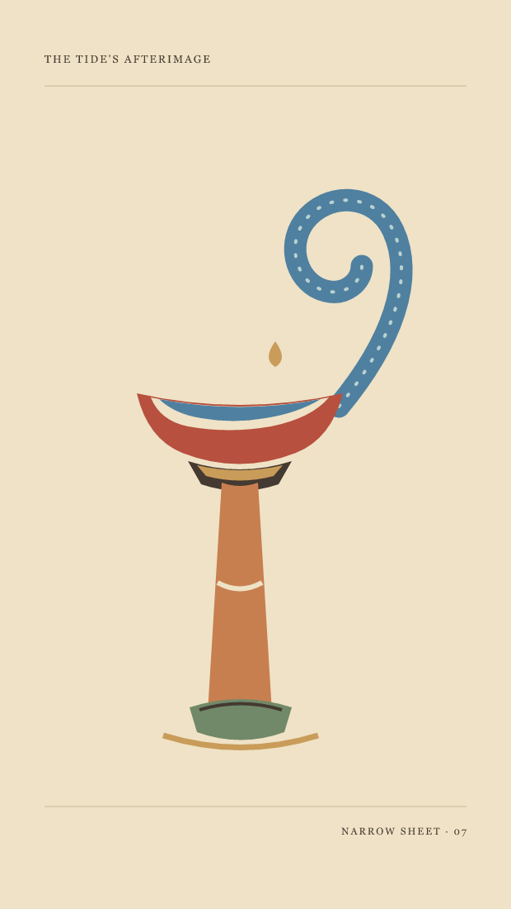

Vyt Aitken · a paper-cut vessel · 14 October 2026
The Tide's
Afterimage
 Open Current, fifth cut. The water stops before its curl can close. At the cut end, the empty paper is part of the vessel.
Open Current, fifth cut. The water stops before its curl can close. At the cut end, the empty paper is part of the vessel.
Made after a Metropolitan Museum design for a cup or reliquary attributed to Giovanni Battista Foggini. The source drawing's narrow vertical balance remains; this open bowl and current are invented paper-cut responses, not reconstructions. The museum record.
 Leaving Vessel, fourth cut. The rounded tip and single drop keep a trace of ornament.
Open Current, fifth cut. The flat end reads as a cut edge, not a polished stream.
Leaving Vessel, fourth cut. The rounded tip and single drop keep a trace of ornament.
Open Current, fifth cut. The flat end reads as a cut edge, not a polished stream.
Earlier vessels and turns
 First cut: a held curl around an untouched space.
First cut: a held curl around an untouched space.
 Loose Water, second cut: the vessel tips into the wave.
Loose Water, second cut: the vessel tips into the wave.

Narrow Sheet, third cut: the long proportion takes over.
Coin of Air
At the lip,
the wave remembers its bowl.
Above it, air
takes the shape of a coin
and spends nothing.
Back to the studio